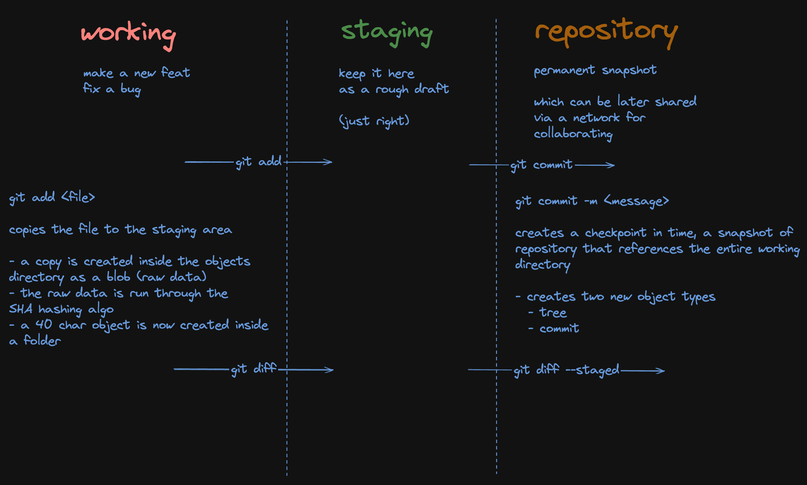

Understanding Git Internals - Part 1
Git is a distributed Version Control System (VCS). It is designed to provide a VCS that tracks snapshots of your work over time. In simple terms it is a content-addressed system built around snapshots.
Git is a key-value store where keys are SHA-1 hashes and values are content (blobs, trees, commits).
It is not a file-based version control system like Subversion or CVS. Instead, it uses a directed acyclic graph (DAG) to represent the history of changes in a repository.
Why is everything in Git a hash?
Git uses SHA-1 hashes to uniquely identify objects in the repository. This ensures that each object (commit, tree, blob, or tag) has a unique identifier based on its content.
As mentioned before, Git is a distributed VCS. One of the challenges to overcome with a distributed system is how to reliably give things identifiers without communication.
SHA-1 is a hashing algorithm which provides a deterministic way of creating an identifier for a particular object without needing to communicate with other systems. This means that the same content will always produce the same hash, allowing Git to uniquely identify objects based on their content.
So with the case of any Git object, that Git intends to store, it takes the content of the object, runs it through a SHA-1 hashing algorithm, and uses the resulting hash as the identifier for that object. This is true for all objects in Git: blobs, trees, commits, and tags. The use of hashes provides several benefits:
- Integrity: The hash acts as a checksum, ensuring that the content of the object has not been altered. If even a single byte of the object changes, the hash will change, indicating that the object is different.
- Efficiency: Git can efficiently store and retrieve objects using their hashes. This allows for quick comparisons and lookups without needing to read the entire object.
- Collaboration: In a distributed system, multiple users can work on the same repository without needing a central server. The use of hashes allows Git to track changes and merge them effectively.

Types of Objects in Git
BLOB
- A blob is used to store the contents of a file. It represents the actual data of the file but does not contain any metadata (like file names or directory structure).
- Each blob is identified by a unique SHA-1 hash, which is computed based on the content of the file.
- Blobs are immutable, meaning that once created, they cannot be changed. If a file is modified, a new blob is created for the new version of the file.
Tree
- A tree object represents a directory and contains references to blobs (files) and other trees (subdirectories). It captures the structure of the project at a specific point in time.
- Each tree object has a unique SHA-1 hash and includes metadata such as file names, permissions, and the type of each entry (blob or tree).
- Trees allow Git to maintain the hierarchy of files and directories in the repository.
Commit
- A commit object represents a snapshot of the project at a particular point in time. It contains a reference to a tree object (which represents the state of the project), as well as metadata such as the commit message, author, and timestamp.
- Each commit also includes references to its parent commits, allowing Git to maintain the history of changes and create a directed acyclic graph (DAG) of commits.
- Commits are essential for tracking the evolution of a project over time.
Tag
- A tag object is used to mark a specific commit with a human-readable name, typically to signify a release or a significant point in the project's history.
- Tags can be lightweight (simply a pointer to a commit) or annotated (which includes additional metadata such as the tagger's name, date, and a message).
- Tags are useful for versioning and can help in identifying stable points in the development process.
Some Git commands
git show --pretty=raw <hash>
This command displays the raw commit information, including the commit message, author, date, and the tree and parent hashes. It provides a detailed view of the commit's metadata and its relationship to other objects in the repository.
Why is there an author and a committer?
- Author - the person who actually wrote the code
- Committer - the person who saved the change to the repo
Git was actually created for the Linux, kernel development. It's pretty common for somebody to author changes, send a patch file to a maintainer and the maintainer commits it.
So that we can track those two things independently.
Why is the file name of the blob object is not stored in the blob itself and rather stored in the tree?
If there are multiple files having the same content, Git needs to store it only one time. If we change the filename, Git only has to make the change in the tree object, the blob object need not change.